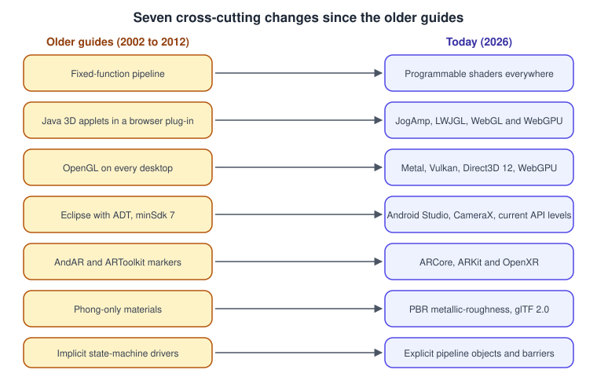
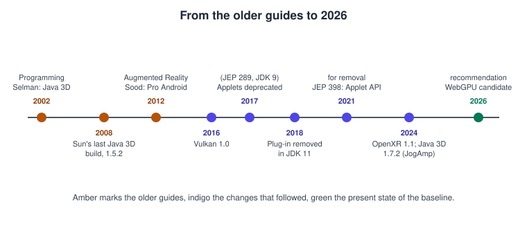
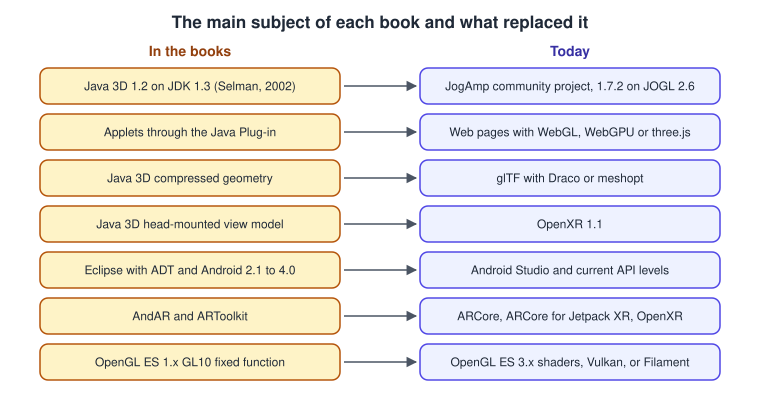
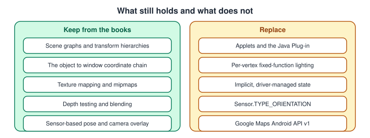

What Has Changed Since the Older Guides
|
This content was generated with the assistance of AI and should be verified against the official documentation before being relied on in production. |
Three books introduce the general ideas of this section: Daniel Selman’s Java 3D Programming (Manning, 2002), Sun’s The Java 3D API Specification, version 1.3 (2002), and Raghav Sood’s Pro Android Augmented Reality (Apress, 2012). The concepts they teach, such as scene graphs, bounds, the view model, lighting equations, picking and sensor-driven overlays, are still the right concepts. Many of the tools, versions and practices they describe are not. This page collects those changes in one place so that you can keep reading the books for ideas and use the pages of this section for current practice. The facts were checked in November 2026.

The cross-cutting changes
| Topic | Older guides | Today | Read more |
|---|---|---|---|
Fixed function to shaders |
Lighting and texturing are fixed-function state set through calls such as the OpenGL light and material functions, and through the Java 3D |
Programmable shaders are the only model in OpenGL core profiles, OpenGL ES 2.0 and later, WebGL, Vulkan, Metal and WebGPU. Lighting is shader code. |
|
Applets and Java 3D to JogAmp and the web |
Java 3D 1.2.1 and 1.3 ran on JDK 1.3 and reached users as applets through the Java Plug-in. |
Applets were deprecated in JDK 9 (JEP 289), the browser plug-in was removed in JDK 11, and the Applet API is deprecated for removal (JEP 398). Java 3D is a community project of JogAmp, version 1.7.2 on JOGL 2.6. Web delivery uses WebGL, WebGPU and three.js. |
Scene Graphs and Asset Formats, Graphics APIs vs Game Engines |
OpenGL deprecated on Apple platforms |
OpenGL is the portable 3D API on every desktop, and OpenGL ES is the mobile API. |
OpenGL is frozen at version 4.6 and is deprecated on Apple platforms, where Metal is the native API. On other platforms Vulkan is the actively developed Khronos API, and layers such as ANGLE and MoltenVK bridge the gaps. |
Cross-Platform Translation Layers, Choosing an API or Engine |
Eclipse and ADT to Android Studio |
Android development in Eclipse with the Android Development Tools, minimum SDK level 7, camera access through the original camera class. |
Android Studio, CameraX or Camera2, and the API levels that current ARCore requires. |
|
AndAR and ARToolkit to ARCore and OpenXR |
Marker tracking through the AndAR port of ARToolkit, location overlays from GPS and compass, and a head-mounted view model specific to Java 3D. |
ARCore (Augmented Images, Geospatial API), ARCore for Jetpack XR, ARKit and RealityKit, WebXR and OpenXR 1.1, with Android XR for glasses and headsets. |
|
Phong-only materials to PBR |
Ambient, diffuse, specular and emissive colours with a shininess exponent, evaluated per vertex in gamma-encoded colour. |
Physically based materials (glTF metallic-roughness), evaluated per fragment in linear colour with tone mapping, lit by image-based lighting and shadow maps. |
Lighting & Shading Models, Color Spaces, HDR and Tone Mapping |
Implicit to explicit APIs |
A global state machine in which the driver tracks state, allocates memory and inserts synchronisation. |
Pipeline state objects, descriptor sets or bind groups, command buffers and explicit synchronisation in Vulkan, Metal 4, Direct3D 12 and WebGPU. |



Java 3D Programming (Selman, 2002)
The book teaches Java 3D 1.2.1 and 1.3 beta on JDK 1.3, targeting Windows 98, NT and 2000. Its chapters on scene graphs, behaviours, interpolators, picking and the render loop are still a clear introduction to retained-mode graphics.
| Chapter | What it says | What is current |
|---|---|---|
1 and 3 |
Java 3D 1.2.1 on JDK 1.3, installed for Windows 98, NT or 2000. |
Java 3D is maintained by the JogAmp community, version 1.7.2 on JOGL 2.6 (last release September 2024). Sun’s last build was 1.5.2 in 2008. See Scene Graphs and Asset Formats. |
1 |
GL4Java as the Java wrapper for OpenGL. |
GL4Java is defunct. Use JOGL or LWJGL (LWJGL) for Java access to OpenGL, Vulkan and OpenAL. |
1 and 17 |
Applets deployed through the Java Plug-in. |
Applets were deprecated in JDK 9 (JEP 289), the plug-in was removed in JDK 11, and the Applet API is deprecated for removal (JEP 398). See History of Real-Time Graphics. |
2 and 10 |
Fixed-function per-vertex lighting with a few lights. |
Per-fragment shading and physically based materials. See Lighting & Shading Models. |
9 |
Depth-sorted transparency may arrive in Java 3D 1.3. |
No API sorts transparent objects implicitly. Engines sort draw calls or use order-independent transparency. See Transparency, Blending and Post-processing. |
18 |
The Java 3D render loop and its threads as the model of a rendering pipeline. |
Command buffers, queues and explicit multithreaded recording. See GPU Architecture Basics and Performance and Profiling. |
The Java 3D API Specification, version 1.3 (Sun, 2002)
The specification defines the Java 3D classes and the view model. Sun’s documentation pages no longer exist; the code and the community documentation live in the JogAmp java3d-core repository.
| Chapter | What it says | What is current |
|---|---|---|
Appendix B |
Compressed geometry as a Java 3D feature. |
glTF with Draco or meshopt compression, supported by three.js and all major engines. See Scene Graphs and Asset Formats. |
9 and appendix C |
A view model for a window on a monitor, a head-mounted display and a room-mounted display. |
OpenXR 1.1 spaces, views and the loader and runtime architecture. See Augmented and Mixed Reality Basics. |
Appendix E |
The fixed-function lighting equations with attenuation and spot cones. |
The equations are still a correct description of the empirical model; production code uses per-fragment shading and PBR. See Lighting & Shading Models. |
All |
Applet deployment and a Sun-hosted runtime. |
Applets are removed from current Java; see the table for Selman’s book above. |
Pro Android Augmented Reality (Sood, 2012)
The book builds phone-AR examples for Android 2.1 to 4.0 in Eclipse, with OpenGL ES 1.x and the AndAR marker library.
| Chapter | What it says | What is current |
|---|---|---|
Introduction |
Project Glass as the flagship head-worn device. |
Project Glass was discontinued. Android XR is the current platform for glasses and headsets. |
2 onward |
Eclipse with ADT, minimum SDK level 7. |
Android Studio. Current ARCore requires far newer API levels. |
2 to 4 |
|
The rotation-vector sensor, or ARCore camera poses. |
2 to 4 |
|
CameraX or Camera2; inside an AR session ARCore owns the camera. See Camera, Location, Sensors, Media and Connectivity. |
3 and 8 |
AndAR, an ARToolkit port hosted on the closed Google Code, for markers. |
ARCore Augmented Images and Geospatial API, ARCore for Jetpack XR, and OpenXR on Android XR. |
6 and 7 |
Google Maps Android API v1 ( |
Shut down. Use the Maps SDK for Android v2 and later, Maps Compose, or the ARCore Geospatial API. |
8 |
OpenGL ES 1.x fixed function ( |
ES 3.x shaders or Vulkan, or Filament and SceneView for glTF. See Graphics: Canvas, OpenGL ES and GLTextureView. |
See it in
OpenGL: What Has Changed Since the Older OpenGL Guides; WebGL: What Has Changed Since the Older WebGL and three.js Guides; Metal: What Has Changed Since the Older Metal Guides; Vulkan: What Has Changed Since the Older Vulkan Guides; Unity: What Has Changed Since the Older Unity Guides; Unreal Engine: What Has Changed Since the Older Unreal Engine Guides.
See also
-
Graphics & Games for the section overview and its bibliography.
-
Glossary for the terms used in the tables above.
References
-
JEP 289: Deprecate the Applet API and JEP 398: Deprecate the Applet API for Removal
-
glTF 2.0 specification, which defines the metallic-roughness material model and the compression extensions
-
Daniel Selman, Java 3D Programming (Manning, 2002): publisher page
-
Raghav Sood, Pro Android Augmented Reality (Apress, 2012): publisher page